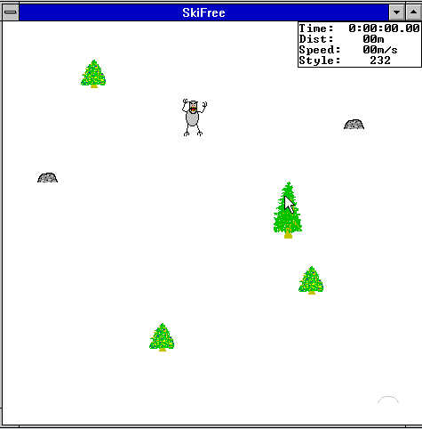

El depredador mayor que nunca dejó de vigilarnos
Un nicho ecológico vacío desde el Pleistoceno tardío, y una cordillera de 7.000 kilómetros — de la Patagonia a Colombia — donde el registro oral insiste en que alguien lo ocupó.
Todo cordón montañoso tiene un vértice más alto que el resto, y —según la tradición de quienes viven bajo su sombra— un guardián que no baja a menudo. En los Andes ese guardián no tiene un solo nombre: cambia con la lengua y la altura, pero la función que se le atribuye es sorprendentemente estable de extremo a extremo del continente. No custodia un tesoro. Custodia una población. La nuestra.
La hipótesis de trabajo de este número —y lo decimos con la seriedad exacta que merece, ni más ni menos— es que el mito del "hombre de las nieves" andino no es una anomalía folclórica aislada, sino la persistencia cultural de algo mucho más antiguo y mucho mejor documentado: el miedo, profundamente cableado, a compartir el territorio con algo más grande, más fuerte y más paciente que nosotros.
Un nicho que quedó vacío demasiado rápido
Durante casi todo el tiempo que el género Homo lleva caminando erguido, no fuimos la especie dominante de nuestro propio paisaje. Compartimos el continente americano con felinos de más de 300 kilos, osos de morro corto capaces de superar los tres metros de altura y manadas que nos veían, con toda razón, como una fuente de proteína más entre otras. La extinción megafaunística de fines del Pleistoceno —debatida aún entre climática y antrópica— vació ese nicho en un abrir y cerrar de ojos evolutivo. Pero el sistema nervioso que se formó bajo esa presión no se vació con él.
La psiquiatría evolutiva tiene un nombre poco romántico para esto: preparedness, o "disposición preparada" — la idea, propuesta por Seligman y desarrollada ampliamente desde entonces, de que no todos los miedos se aprenden igual de fácil. Aprendemos a temerle a una serpiente, a la oscuridad de un bosque cerrado o a una figura grande que se mueve entre los árboles con muchísima más facilidad y persistencia que a un enchufe eléctrico o un auto —a pesar de que estos últimos nos matan, estadísticamente, mucho más seguido. El circuito ya viene precargado. Solo espera un estímulo que se le parezca.
La amígdala no sabe que el oso de morro corto se extinguió
Cuando algo grande, oscuro y erguido se mueve al borde del campo visual, la amígdala responde antes de que la corteza prefrontal termine de formular la pregunta "¿esto es peligroso?". Es una arquitectura de decisión asimétrica a propósito: el costo de una falsa alarma (correr sin necesidad) es bajísimo comparado con el costo de no reaccionar ante un depredador real. Ese sesgo —barato de activar, carísimo de ignorar— es exactamente el que explotan, sin saberlo, todas las siluetas grandes, peludas y bípedas que la imaginación humana ha producido en cada cordillera del planeta: el Yeti del Himalaya, el Sasquatch de la costa noroeste de Norteamérica, el Mapinguari amazónico, y sí, el guardián de los Andes.
No hace falta haber visto nunca a uno para temerle correctamente. Basta con haber heredado, generación tras generación, el circuito de quienes sí convivieron con algo parecido.
SkiFree, o cómo el inconsciente se coló en un juego de Windows 3.1
Hay un experimento involuntario de psicología popular que ilustra esto mejor que cualquier paper: en 1991, el programador Chris Pirih diseñó SkiFree, un juego casual de esquí incluido en el Microsoft Entertainment Pack. El objetivo declarado era simple —esquiar, esquivar árboles, sumar distancia—. Pero a los 2.000 metros, sin aviso ni narrativa previa, aparecía en pantalla un yeti que perseguía al esquiador a una velocidad imposible de mantener indefinidamente, y que —tarde o temprano, sin excepción— terminaba por alcanzarlo y comérselo.

Nadie le pidió a Pirih un depredador insuperable. Y sin embargo, treinta y tantos años después, SkiFree no se recuerda por su sistema de puntaje ni por sus gráficos de 16 colores: se recuerda casi exclusivamente por el yeti. Ese es, quizás, el dato etnográfico más honesto de todo este artículo: cuando a un sistema lúdico completamente arbitrario se le agrega un depredador mayor que siempre alcanza a su presa, la memoria colectiva lo adopta como el corazón del juego. No hacía falta que fuera realista. Hacía falta que fuera inevitable — que es, exactamente, la cualidad que la amígdala de nuestros ancestros aprendió a temerle más que a la muerte rápida: la persecución de la que no se puede escapar del todo.
Puerto abierto del código original — basicallydan/skifree.js, distribuido bajo licencia MIT.
Del esquiador de pixeles al bosque real
La diferencia entre SkiFree y el guardián andino no es de sustancia, es de escala. Uno es una anécdota de software; el otro, una figura que ha ocupado —con variaciones locales pero con una función notablemente constante— el imaginario de comunidades separadas por miles de kilómetros de cordillera, desde los relatos patagónicos de un ser solitario de las alturas hasta homólogos descritos en distintas cosmovisiones a lo largo de la cadena andina hasta Colombia. En ninguno de los dos casos hace falta que el depredador exista para que cumpla su función psíquica: recordarnos, con la eficacia que solo un miedo antiguo tiene, que no somos la cima automática de ningún ecosistema — que alguien, en algún punto de la ladera, todavía nos mira pastar.
Simulación de campo — perspectiva invertida
Como ejercicio conceptual complementario a este artículo, Chamalnquimyst Labs desarrolló un modelo conductual simplificado donde el usuario ocupa, por una vez, el rol del depredador: pastorea, atrae y regula una población humana que se comporta con la dinámica de manada descrita más arriba —incluida la organización defensiva cuando el grupo se siente amenazado en número—. No es un dato científico. Es, en el sentido más literal, un juego intelectual: una forma de sentir desde adentro la lógica que el resto del artículo describe desde afuera.
Abrir el simulador de campo →Cierre de campo
No hace falta resolver si el guardián de la cordillera existe para que la pregunta siga siendo útil. La psiquiatría evolutiva no necesita que el depredador sea real para explicar por qué seguimos, todos, mirando dos veces hacia el borde oscuro del bosque antes de entrar. El mito es el fósil; el miedo es el hueso que todavía funciona.